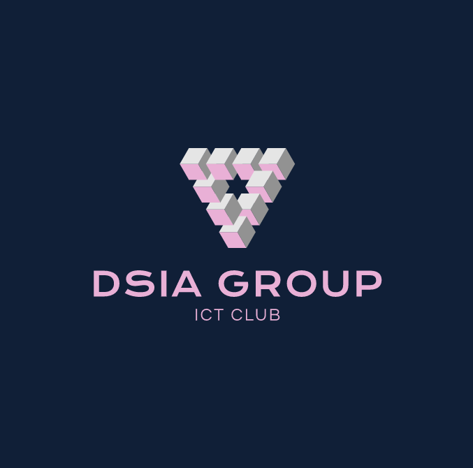

Welcome to DSIA Group
Welcome to Digital Skills In Action Group (DSIA Group)
Our Club teachs Programming Languages and also the basic of ICT. If you are new to our club click here to register.
Vision
To enable ICT proficient students, for ICT lies at the core of every organization today. Our vision is also to be more than just observers of technological development. Rather, we must create technological catalysts in our own environment.
Staff Members.
1. Nambakumana Issac - The President Of DSIA Group
2. SHIMO Anne Divine - The Vise President Of DSIA Group
3. KANAMUGIRE Beula Acquilas - The Secretary Of DSIA Group
4. Rosslin Angelo - Assistant Secretary
Mission
The club aims to improve the ICT skills of its members by nurturing their creative and programming skills, and sharpening their research and presentation skills. The club also aims to promote innovation among its members as they seek out technological solutions to problems that may arise in a school environment
Goals And Objectives
• To help other students become competent and confident users of ICT through training sessions.
• To develop policies concerning the use of technology at school.
• To help students develop an appreciation for the role of ICT in today's society.
• To help students develop as innovative beings who will see problems and create solutions.
• To provide a fun and interactive approach to ICT.
• To raise awareness and promote the use of technology as a teaching/learning aid.
• To provide ICT club students with sufficient skills to find solutions for in-house needs, such as timetable creation, duty allocation etc..
• To encourage students to develop as innovative beings, transforming them into confident and competent users.
• To encourage students should develop their own website and thereby turn into young entrepreneurs.
• To encourage students to propose their innovative ideas to the world through their participation in various coding events and bringing laurels to the institution.
Meeting Day
Wednesday 15:00 PM - 16:00 PM